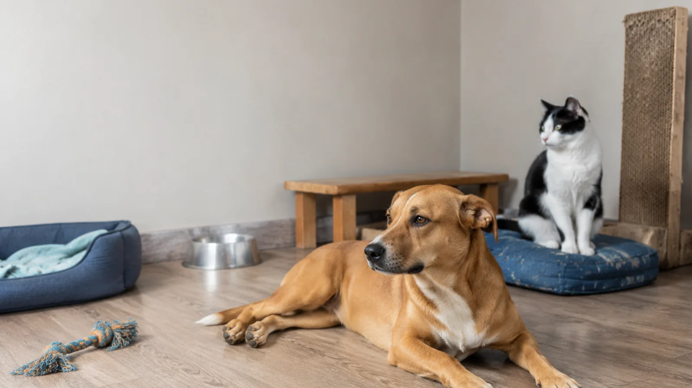

Quando devo castrar meu pet? O que a literatura atual diz sobre a castração estratégica
Quando castrar seu pet? Entenda os benefícios e riscos da castração precoce e como definir o melhor momento com avaliação individualizada.

Durante muitos anos, a castração foi apresentada aos tutores como uma decisão simples: o animal chegava a determinada idade e deveria ser operado.
Hoje sabemos que a resposta é muito mais complexa.
A castração continua sendo uma das ferramentas mais importantes da medicina veterinária. Ela previne a reprodução indesejada, contribui para o controle populacional e pode evitar ou tratar diversas doenças do aparelho reprodutor. Em animais com acesso à rua, pertencentes a abrigos, resgatados ou mantidos em ambientes nos quais não é possível impedir cruzamentos, realizá-la precocemente pode ser uma decisão fundamental.
Entretanto, isso não significa que todos os mamíferos, de todas as espécies, portes, raças e estilos de vida devam ser castrados na mesma idade.
Os hormônios sexuais não participam apenas da reprodução. Eles influenciam o crescimento ósseo, a composição corporal, a musculatura, o metabolismo, o comportamento e diferentes sistemas do organismo. Por isso, retirar as gônadas antes do amadurecimento do animal pode produzir consequências diferentes daquelas observadas quando o procedimento é realizado na vida adulta.
A pergunta correta, portanto, não é simplesmente:
“Com quantos meses devo castrar?”
A pergunta mais consciente é:
“Por que este animal precisa ser castrado e qual é o melhor momento para ele?”
Castração e esterilização são exatamente a mesma coisa?
Não necessariamente.
A palavra esterilização significa impedir permanentemente a reprodução. Isso pode ser alcançado por diferentes técnicas.
A castração tradicional, também chamada de gonadectomia, envolve a retirada das gônadas:
- ovários nas fêmeas;
- testículos nos machos.
Nas fêmeas, podem ser retirados apenas os ovários, procedimento chamado ovariectomia, ou os ovários e o útero, na ovariohisterectomia.
Como as gônadas também produzem os principais hormônios sexuais, a castração tradicional não apenas impede a reprodução: ela também altera de forma permanente o ambiente hormonal do organismo.
Existem técnicas que preservam os hormônios, como vasectomia e histerectomia com preservação ovariana, mas elas possuem indicações, limitações e riscos específicos. Além disso, não previnem todas as doenças hormonodependentes e não são apropriadas para todos os pacientes.
Por que a castração precoce se tornou tão comum?
A recomendação de castrar animais jovens não surgiu por acaso.
Cães e gatos podem atingir a maturidade sexual muito cedo, reproduzir-se rapidamente e gerar sucessivas ninhadas. Em regiões com abandono, acesso livre às ruas, baixa fiscalização reprodutiva e grande quantidade de animais comunitários, esperar pode significar permitir novas gestações antes que o animal retorne para o procedimento.
Nessas situações, a castração precoce é uma ferramenta de controle populacional, saúde pública e proteção animal.
Ela é particularmente importante para:
- animais com acesso à rua;
- cães e gatos comunitários;
- animais de abrigos e organizações de proteção;
- pacientes que serão doados e poderão perder o acompanhamento;
- casas com machos e fêmeas sem separação segura;
- tutores que não conseguem garantir o controle reprodutivo;
- regiões com altos índices de abandono.
Em gatos, a literatura disponível mostra que a gonadectomia realizada antes da puberdade pode ser executada com segurança quando há estrutura, equipe e protocolo anestésico adequados. Também reduz comportamentos relacionados à reprodução, como marcação urinária, fugas, disputas e acasalamentos indesejados. Até o momento, os estudos em felinos não demonstram o mesmo padrão consistente de alterações ortopédicas observado em determinadas raças de cães.
Portanto, dizer que a castração precoce é sempre errada seria tão incorreto quanto afirmar que ela é sempre a melhor escolha.
Quando o risco de reprodução é controlado, precisamos ter pressa?
Essa é a questão central.
Quando estamos diante de um animal estritamente domiciliado, sem contato com indivíduos férteis do sexo oposto, acompanhado por tutores responsáveis e sem doença reprodutiva, não existe obrigatoriamente uma urgência para retirar suas gônadas.
Nesses casos, é possível discutir uma castração estratégica.
Isso significa preservar a função hormonal enquanto ela ainda pode trazer benefícios ao desenvolvimento e reavaliar o paciente ao longo da vida, considerando:
- espécie;
- sexo;
- raça;
- porte;
- velocidade de crescimento;
- histórico familiar;
- finalidade do animal;
- comportamento;
- risco de fuga;
- presença de outros animais;
- doenças preexistentes;
- risco anestésico;
- possibilidade real de acompanhamento veterinário.
Não somos contra a castração. Somos contra transformar uma cirurgia definitiva em um protocolo automático e idêntico para todos os pacientes.
Quais são os benefícios da castração?
Prevenção da reprodução indesejada
Esse é o benefício mais evidente e, em muitos contextos, o mais importante. A castração impede gestações não planejadas, reduz o nascimento de animais destinados ao abandono e facilita a convivência entre machos e fêmeas. Nos gatos com acesso externo, também pode reduzir fugas, acasalamentos, vocalização sexual, marcação territorial e conflitos associados à procura por parceiros.
Prevenção da piometra
A piometra é uma infecção uterina potencialmente fatal, especialmente importante em cadelas e também possível em gatas. O útero pode acumular grande quantidade de secreção purulenta, enquanto bactérias e toxinas desencadeiam inflamação sistêmica, alterações renais, sepse, ruptura uterina e morte.
A retirada dos ovários elimina os ciclos hormonais que participam do desenvolvimento da doença. Por isso, a castração é a principal forma de prevenção da piometra.
No entanto, prevenir piometra não significa obrigatoriamente castrar todos os animais ainda filhotes. Em pacientes com reprodução controlada, o momento pode ser discutido individualmente, desde que o tutor compreenda os riscos de manter uma fêmea inteira e reconheça rapidamente sinais como secreção vaginal, aumento da sede, apatia, vômitos, distensão abdominal e perda de apetite.
Doenças ovarianas, uterinas e testiculares
A castração elimina o risco de doenças nos órgãos removidos, incluindo:
- cistos e tumores ovarianos;
- tumores uterinos;
- hiperplasia endometrial;
- torção uterina ou ovariana em determinadas espécies;
- tumores testiculares;
- torção testicular;
- alterações relacionadas ao criptorquidismo.
Nos machos criptorquidas — aqueles em que um ou ambos os testículos não desceram normalmente — a retirada cirúrgica costuma ser recomendada devido ao risco aumentado de neoplasia e torção do testículo retido.
Doenças prostáticas
A castração reduz de forma importante a estimulação hormonal da próstata e é muito eficiente no tratamento da hiperplasia prostática benigna. Também pode ser indicada em alguns casos de prostatite, cistos prostáticos e outras doenças reprodutivas. Entretanto, não previne todos os tipos de câncer de próstata, e tumores prostáticos podem ocorrer inclusive em cães castrados.
Tumores mamários: o benefício existe, mas a discussão é mais complexa do que parecia
Durante décadas, repetiu-se que castrar uma cadela antes do primeiro cio praticamente eliminaria o risco de tumor mamário.
A exposição hormonal provavelmente participa do desenvolvimento de parte dessas neoplasias, e cadelas inteiras apresentam maior ocorrência de tumores mamários em diferentes populações. Contudo, revisões recentes demonstram que a qualidade da evidência usada para estabelecer percentuais extremamente precisos é limitada e que nem todos os estudos confirmam o mesmo grau de proteção da castração pré-púbere. Uma revisão sistemática publicada em 2025 encontrou resultados inconsistentes entre os estudos avaliados.
Isso não significa que o benefício não exista. Significa que não devemos apresentar números antigos como verdades matemáticas aplicáveis a qualquer cadela.
Em gatas, os tumores mamários tendem a ser biologicamente agressivos, e a exposição hormonal também é considerada relevante. Ainda assim, a decisão deve considerar o conjunto de benefícios e riscos, especialmente quando o animal está totalmente protegido contra reprodução.
Quais malefícios podem estar associados à castração precoce?
Antes de continuar, é fundamental diferenciar duas ideias: associação não é necessariamente causa, e os riscos não são iguais para todas as espécies ou raças.
Grande parte dos estudos disponíveis é retrospectiva. Isso significa que os pesquisadores analisaram prontuários de animais que já haviam sido atendidos. Esse tipo de trabalho é extremamente útil, mas pode sofrer influência de genética, porte, alimentação, atividade física, ambiente, condição corporal e perfil dos tutores.
Mesmo com essas limitações, a literatura atual é suficiente para abandonar a ideia de que a castração precoce seja biologicamente neutra para todos os mamíferos.
Alteração do fechamento das placas de crescimento
Os hormônios sexuais participam do amadurecimento ósseo e do fechamento das placas de crescimento, também chamadas de fises.
Quando as gônadas são retiradas antes da puberdade, o fechamento pode ocorrer mais tarde, permitindo que determinados ossos longos cresçam por mais tempo. Isso não significa simplesmente que o animal ficará “maior”, mas que as proporções e relações biomecânicas entre os ossos podem ser alteradas.
Em algumas raças de cães, especialmente de médio, grande e gigante porte, essa mudança pode contribuir para maior predisposição a doenças articulares.
Ruptura do ligamento cruzado cranial
A doença do ligamento cruzado cranial é uma das causas mais comuns de claudicação em cães e frequentemente exige cirurgia ortopédica.
Estudos observacionais encontraram associação entre gonadectomia e aumento do risco em determinadas populações, especialmente quando realizada antes de um ano de idade em algumas raças e portes. Revisões recentes consideram que a evidência é heterogênea, mas sugestiva de maior risco em determinados grupos — e não uma regra universal aplicável a todos os cães.
Displasia coxofemoral e outras doenças articulares
Os estudos da Universidade da Califórnia, Davis, demonstraram que a relação entre castração, idade e doenças articulares varia significativamente entre raças.
Em algumas, não houve aumento relevante. Em outras, principalmente entre cães maiores, a gonadectomia precoce esteve associada a maior ocorrência de displasia coxofemoral, lesões de ligamento cruzado e displasia de cotovelo.
Até mesmo entre cães sem raça definida, o peso corporal modificou o risco: animais maiores apresentaram associações diferentes das observadas nos menores.
Isso derruba a lógica de recomendar a mesma idade para um cão de quatro quilos e outro que chegará a sessenta.
Osteoartrite
Peso corporal elevado, genética, conformação, lesões articulares e envelhecimento influenciam o desenvolvimento da osteoartrite.
Um estudo amplo publicado em 2023 encontrou associação entre gonadectomia, idade mais jovem no procedimento e maior risco de osteoartrite em cães. Entretanto, a condição corporal também exerce papel decisivo, e um animal castrado que permanece magro e musculoso não tem o mesmo risco de um paciente obeso e sedentário.
Obesidade e alterações metabólicas
Após a castração, as necessidades energéticas podem diminuir enquanto o apetite aumenta. Esse desequilíbrio favorece ganho de peso, especialmente se o tutor mantiver a mesma quantidade de alimento e o animal tiver pouca atividade física.
A obesidade não é uma consequência inevitável da castração, mas o risco aumenta e precisa ser controlado por meio de:
- ajuste calórico;
- acompanhamento do escore corporal;
- pesagens regulares;
- enriquecimento ambiental;
- brincadeiras;
- exercícios adequados;
- preservação da massa muscular.
Em gatos, estudos demonstraram aumento da ingestão alimentar, do peso e da gordura corporal após a castração, embora idade, sexo, dieta e manejo modifiquem intensamente esse efeito.
Incontinência urinária em cadelas
A incompetência do mecanismo do esfíncter uretral ocorre principalmente em cadelas castradas, com maior predisposição em algumas raças e em animais de maior porte. Pode surgir meses ou anos depois da cirurgia e se manifestar como perda de urina durante o sono ou repouso. Embora existam tratamentos eficazes para muitos casos, a possibilidade de incontinência deve fazer parte da conversa com tutores, especialmente em cadelas predispostas.
Alterações vulvares e dermatológicas
Quando a castração é realizada antes do amadurecimento sexual, algumas cadelas podem manter uma vulva pequena e parcialmente recoberta por dobras de pele. Em pacientes predispostas, isso pode favorecer dermatite perivulvar, acúmulo de secreção, desconforto e infecções urinárias recorrentes.
Neoplasias: cuidado com generalizações
Alguns estudos encontraram associação entre gonadectomia e maior ocorrência de determinados cânceres em raças específicas, incluindo:
- osteossarcoma;
- hemangiossarcoma;
- linfoma;
- mastocitoma;
- alguns tumores prostáticos.
Entretanto, isso não significa que a castração “cause câncer” de forma geral. As associações variam por raça, sexo, idade da cirurgia e tipo de neoplasia. Também existe um desafio estatístico: animais castrados podem viver mais e, consequentemente, alcançar idades em que o câncer se torna naturalmente mais frequente.
Comportamento: castrar não é sinônimo de “acalmar”
A castração pode reduzir comportamentos diretamente ligados à reprodução, como:
- procura por parceiros;
- monta sexual;
- marcação urinária;
- algumas disputas entre machos;
- fugas motivadas pelo cio.
Porém, ansiedade, medo, agressividade defensiva, proteção de recursos e reatividade possuem causas complexas. A cirurgia não substitui socialização, manejo, enriquecimento ambiental, treinamento e avaliação comportamental.
Riscos cirúrgicos e anestésicos
Toda cirurgia possui riscos, mesmo quando eletiva e realizada em um animal saudável. Entre as possíveis complicações estão:
- hemorragia;
- infecção;
- reação aos medicamentos;
- hipotermia;
- hipotensão;
- dor;
- abertura de pontos;
- lesão de estruturas adjacentes;
- complicações respiratórias ou cardiovasculares;
- aderências;
- complicações gastrointestinais, especialmente em pequenos herbívoros.
Em animais pequenos, como coelhos, porquinhos-da-índia, ratos e hamsters, pequenas variações fisiológicas têm um impacto proporcionalmente maior.
Castração em cães
Entre todas as espécies domésticas, os cães apresentam a literatura mais clara a favor da individualização.
Não é possível estabelecer uma única recomendação para um Yorkshire de três quilos e um Pastor-alemão ou Dogue Alemão.
Em quais situações pode ser interessante esperar? Quando o cão é domiciliado, não possui risco de reprodução, está em desenvolvimento e pertence a uma raça ou porte com predisposição ortopédica (médio, grande e gigante porte, cães atletas ou de trabalho).
Quando a indicação se torna mais forte? Diante de piometra, doenças ovarianas/uterinas, tumores testiculares, criptorquidismo, hiperplasia prostática sintomática, torção testicular ou risco real de reprodução e fugas.
Castração em gatos
Em gatos com acesso à rua, possibilidade de fuga ou convivência com indivíduos férteis, a prioridade absoluta deve ser impedir a reprodução. Nesses casos, a castração precoce é fundamental.
Em gatos estritamente domiciliados, o tutor deve considerar comportamentos como marcação territorial, vocalização, estresse do cio e prevenção de doenças uterinas/mamárias. A literatura não aponta os mesmos problemas ortopédicos vistos em cães nem comprova que cause obstrução uretral. O cuidado chave no pós-operatório felino é o controle calórico e de peso.
Castração em coelhos
As doenças uterinas são extremamente importantes nas coelhas (alta incidência de hiperplasia endometrial e adenocarcinoma uterino com a idade). Por isso, a castração de coelhas é fortemente recomendada ao longo da vida.
Porém, coelhos possuem particularidades anestésicas e gastrointestinais sensíveis. Em fêmeas protegidas contra reprodução, pode-se realizar o procedimento de forma planejada e estratégica após a maturação, com equipe especializada em animais exóticos.
Nos machos, auxilia na convivência e controle reprodutivo, mas não deve ser encarada como obrigatória e imediata em todo filhote macho solitário.
Castração em chinchilas
Nas chinchilas, a castração deve ser avaliada individualmente e não como um procedimento preventivo obrigatório universal para jovens.
Se a reprodução estiver controlada, a literatura não demonstra a mesma frequência elevada de doenças reprodutivas malignas como em coelhas. A cirurgia é indicada em casos de machos e fêmeas convivendo juntos, massas ovarianas/uterinas, infecções uterinas, prolapsos ou distocias.
Castração em porquinhos-da-índia
Cistos ovarianos e doenças genitais são muito comuns em fêmeas adultas e idosas, podendo causar alopecia simétrica e dor.
Em porquinhos domiciliados sem risco reprodutivo, pode-se realizar acompanhamento preventivo regular e operar de forma eletiva ou logo aos primeiros sinais clínicos de cistos ou alterações uterinas.
Furões
A castração precoce excessiva (comum em criadouros comerciais) está associada ao hiperadrenocorticismo em furões. Métodos de esterilização com preservação hormonal devem ser discutidos sempre que possível.
Ratos, twisters, hamsters e pequenos roedores
Em pequenos roedores, a cirurgia eletiva precoce não é uma regra geral devido ao tamanho diminuto e aos riscos anestésicos. O procedimento é reservado para indicações clínicas claras (tumores de mama/reprodutivos, doenças uterinas, necessidade de socialização entre sexos opostos).
Fêmeas devem ser castradas em algum momento da vida?
Como o risco acumulado de doenças reprodutivas e mamárias aumenta com o envelhecimento, discutir a castração na maturidade antes que a paciente se torne idosa ou debilidade por emergências é uma excelente estratégia.
Quando a castração deixa de ser opcional?
Torna-se mandatória e emergencial em casos de:
- Piometra;
- Neoplasias ovarianas, uterinas ou testiculares;
- Criptorquidismo;
- Hiperplasia prostática grave sintomática;
- Torção de ovário, útero ou testículo;
- Hemorragias e infecções reprodutivas ativas.
E se o tutor não conseguir impedir uma reprodução?
Se o animal tem acesso à rua, convive com outros animais férteis, vive em abrigo ou corre risco de fuga, a castração imediata e precoce é a melhor e mais responsável escolha.
Então, quando devo castrar meu pet?
A boa medicina não escolhe entre ser “a favor” ou “contra” a castração. Ela escolhe o paciente certo, pela razão certa e no momento certo.
Dica da Fauna Pet
Antes de marcar a cirurgia, pergunte ao médico-veterinário:
“Qual é o benefício esperado da castração neste momento e quais são os riscos de fazê-la agora ou de esperar?”
Quando a única justificativa é “sempre fizemos assim”, talvez esteja faltando individualização.
A recomendação mais importante
A melhor emergência é aquela que conseguimos evitar. Mantenha a rotina de check-ups veterinários sempre em dia (anuais para cães e gatos de 0 a 7 anos, e semestrais para animais não convencionais e silvestres).
Sobre a Fauna Pet
A Fauna Pet é um hospital veterinário 24 horas em Sorocaba, especializado no atendimento de cães, gatos, aves, répteis, coelhos, roedores e outros pets não convencionais. Contamos com uma equipe preparada para oferecer consultas, exames laboratoriais, radiografia, ultrassonografia, internação veterinária e atendimento de emergência para animais silvestres e exóticos. Nosso compromisso é unir medicina veterinária baseada em evidências, tecnologia e cuidado individualizado para oferecer o melhor tratamento a cada paciente.
Se você percebeu qualquer alteração no comportamento ou na saúde do seu pet, procure atendimento veterinário. A avaliação individual é indispensável para definir se a castração está indicada e qual é o melhor momento para realizá-la.
Gostou deste conteúdo?
Então acompanhe a Fauna Pet no Instagram @fauna_pet, lá você encontra mais informações sobre este e muitos outros temas, além de conteúdos sobre medicina veterinária, comportamento animal, medicina preventiva, dicas de manejo, curiosidades, fotos, vídeos e um pouco da rotina da nossa equipe.
Escrito por Jhonatan Iannaccone Myszkowski Pereira CRMV-SP 43.777 Proprietário do Hospital Veterinário Fauna Pet
Referências
- Hart BL, Hart LA, Thigpen AP, Willits NH. Assisting decision-making on age of neutering for 35 breeds of dogs: associated joint disorders, cancers, and urinary incontinence. Frontiers in Veterinary Science. 2020;7:388.
- Hart BL, Hart LA, Thigpen AP, Willits NH. Assisting decision-making on age of neutering for mixed breed dogs of five weight categories. Frontiers in Veterinary Science. 2020;7:472.
- Hart BL, Hart LA, Thigpen AP, Willits NH. Neutering of German Shepherd Dogs: associated joint disorders, cancers and urinary incontinence. Veterinary Medicine and Science. 2016;2(3):191–199.
- Howe LM. Current perspectives on the optimal age to spay/castrate dogs and cats. Veterinary Medicine: Research and Reports. 2015;6:171–180.
- Kustritz MVR. Determining the optimal age for gonadectomy of dogs and cats. Journal of the American Veterinary Medical Association. 2007;231(11):1665–1675.
- Houlihan KE. A literature review on the welfare implications of gonadectomy of dogs. Journal of the American Veterinary Medical Association. 2017;250(10):1155–1166.
- Low D, et al. The association between gonadectomy and timing of gonadectomy and the risk of cranial cruciate ligament disease in dogs. Veterinary and Comparative Orthopaedics and Traumatology. 2024.
- Graves JL, et al. Body weight, gonadectomy, and other risk factors for osteoarthritis in companion dogs. Frontiers in Veterinary Science. 2023.
- Palestrini C, et al. Influence of gonadectomy on canine behavior. Animals. 2021;11(2):553.
- Xavier RGC, et al. Canine pyometra: a short review of current advances. Animals. 2023;13(21):3310.
- Beaudu-Lange C, et al. Prevalence of reproductive disorders including mammary tumors and associated mortality in female dogs. Veterinary Sciences. 2021;8(9):184.
- Guirguis P, et al. Does pre-pubertal spaying reduce the risk of mammary tumours in female dogs? A systematic review. Animals. 2025.
- Joyce A, Yates D. Help stop teenage pregnancy! Early-age neutering in cats. Journal of Feline Medicine and Surgery. 2011;13(1):3–10.
- de Oliveira Sampaio K, et al. Neutering is not associated with early-onset urethral obstruction in cats. Journal of Feline Medicine and Surgery. 2022.
- Salt C, et al. Comparison of growth in neutered domestic shorthair kittens with growth in sexually intact cats. BMC Veterinary Research. 2023.
- Bertram CA, et al. Genital tract pathology in female pet rabbits. Journal of Comparative Pathology. 2018;164:1–14.
- Pornsukarom S, et al. Analysis of occurrence and risk factors associated with reproductive tract lesions in pet rabbits. Animals. 2023.
- Hill FI, et al. Neoplastic and non-neoplastic lesions in biopsy samples from pet rabbits. Journal of Veterinary Diagnostic Investigation. 2024.
- Pilny A. Ovarian cystic disease in guinea pigs. Veterinary Clinics of North America: Exotic Animal Practice. 2014;17(1):69–75.
- Nielsen TD, et al. Ovarian cysts in guinea pigs: influence of age and reproductive status on prevalence and size. Journal of Small Animal Practice. 2003;44(6):257–260.
- Hsu CC, Chan MM, Colette LW. Biology and Diseases of Chinchillas. In: Laboratory Animal Medicine. 3rd ed. Academic Press; 2015.
- Bertram CA, et al. Genital tract pathology in female pet guinea pigs. Veterinary Pathology. 2019;56(3):476–484.
- Frohlich J, Brandão J. Chinchillas. Merck Veterinary Manual, 2026.
- Oglesbee BL. Rodents. In: Blackwell's Five-Minute Veterinary Consult: Small Mammal. 2nd ed. Wiley-Blackwell; 2011.